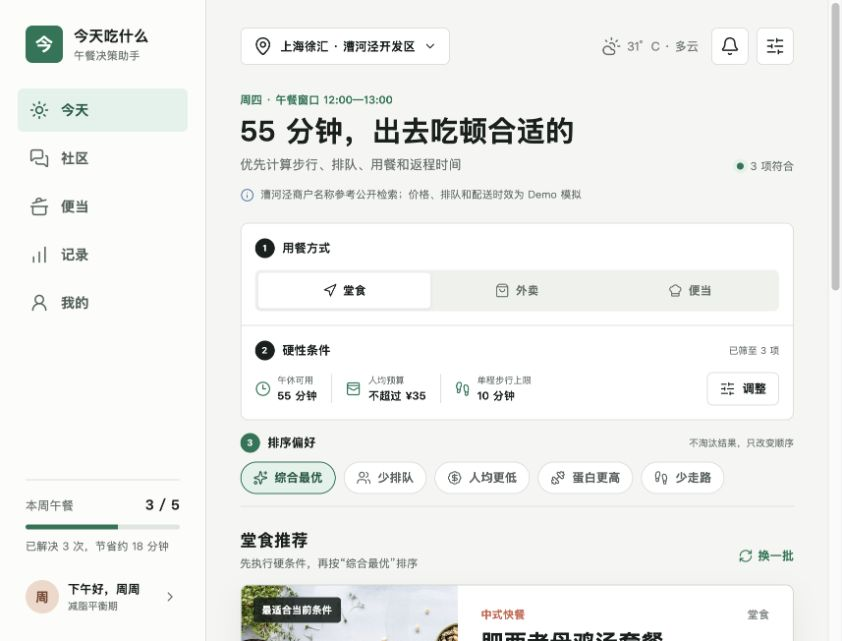

Product Design / 产品设计
今天吃什么
从“午休时间有限却难以快速决定吃什么”出发，将用户偏好、现实约束和本地供给 转化为可解释的推荐产品，并延伸到饮食记录、社区运营与会员服务。

漕河泾商户、价格、排队与配送时效为 Demo 模拟数据
End-to-end Product Thinking
从午休困境到可验证产品
核心不是再做一个“随机选菜器”，而是把真实午休约束转化为清晰、可解释、能持续学习的决策系统。
-
01
场景定位
聚焦工作日 12:00–13:00 的高频决策：时间短、选择多、信息分散，用户需要在堂食、外卖和便当三条路径间快速取舍。
-
02
用户与需求拆解
以漕河泾职场人为核心用户，拆分预算、距离、排队、用餐时长、口味、忌口、营养目标和做饭水平，区分必须满足与偏好加分。
-
03
决策模型
先用午休时间、预算、步行 / 送达 / 备餐上限和忌口做硬过滤，再按少排队、少走路、人均更低、高蛋白与配送稳定度排序。
-
04
MVP 与产品结构
搭建今日推荐、堂食 / 外卖 / 便当、饮食记录、个人画像和漕河泾午饭社区；设置变化会实时驱动推荐结果，验证决策链路。
-
05
社区增长
用推荐、附近、关注与热榜组织本地内容，以探店笔记、点赞、收藏、评论和话题沉淀真实体验，降低试错并形成回访理由。
-
06
商业化与下一步
IAP 会员承载 AI 饮食管家、营养和健身方案；后续接入定位、商户、排队与配送接口，并用决策时长、推荐采纳率和 7 日留存验证价值。
End-to-end Product Thinking
From lunch friction to a testable product
The goal was not another random meal picker, but an explainable decision system built around real lunch-break constraints.
- 01
Scenario
Focus on the recurring 12:00–13:00 workplace lunch decision, where limited time, excessive choice, and fragmented information compete across dine-in, delivery, and bento routes.
- 02
User needs
Translate budget, distance, queueing, eating time, taste, allergies, nutrition goals, and cooking ability into must-have constraints and preference signals.
- 03
Decision model
Filter first by time, budget, travel or delivery limit, and dietary restrictions; then rank by queue time, distance, price, protein, and delivery stability.
- 04
MVP structure
Build Today, dine-in / delivery / bento, food records, preference profile, and the Caohejing lunch community. Updated settings immediately change the recommendation set.
- 05
Community growth
Use Recommended, Nearby, Following, and Ranking feeds with posts, likes, saves, comments, and local topics to capture real experience and create a reason to return.
- 06
Business and iteration
Use IAP membership for an AI diet assistant and nutrition plans; connect real location, merchant, queue, and delivery data, then validate decision time, adoption, and 7-day retention.
Product Judgment
先验证“更快做决定”，再扩展营养与交易价值
当前 Demo 重点验证推荐逻辑、信息层级与跨场景体验，不用模拟数据包装业务结果。 第一阶段以完成一次午餐决策所需时间和推荐采纳率为北极星指标；只有核心决策价值成立后， 才逐步引入真实供给数据、个性化营养服务和商业合作。